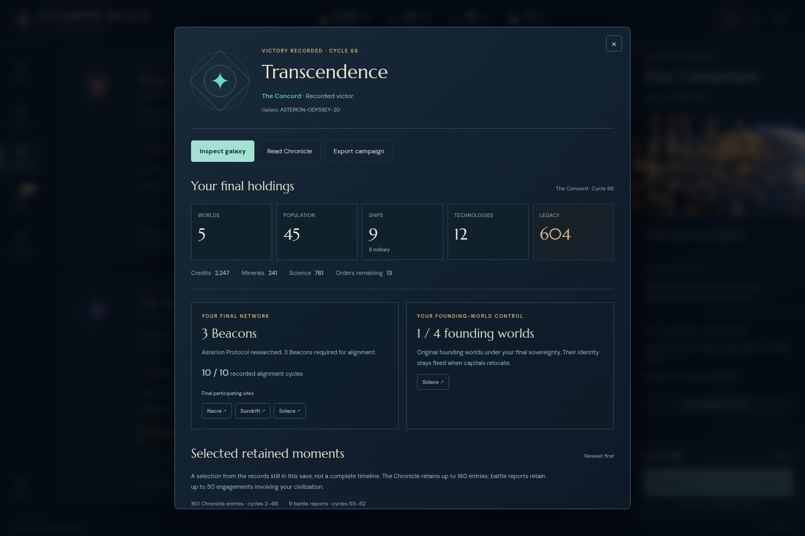

ASTERION REACH · ACTUAL VERSION 0.20 CAMPAIGN
The Odyssey: a contested path to Transcendence
The Concord completed its Beacon network at cycle 66, with Khar one step behind at 9/10. Three blockades interrupted alignment. Relief fleets, repairs, additional shipyards and two paid peace settlements restored the path to victory.
Read the player's illustrated campaign report · Read the independent replay review · Download the actual final save

One played history, reproduced exactly
The campaign used visible controls on an immutable version-0.20 build. It used no save edits, grants, engine commands, policy automation or rollback. The original record preserves decisions, observer-safe views, seven driver errors and zero browser errors. A separate reviewer reconstructed successful ordinary commands from actual control attributes and selection history.
All 280 commands, 65 end cycles and 16 exported checkpoints reproduce exactly. Before every command, a JSON reload produces the same result and complete state: 280 comparisons. All 281 initial/post-command states validate with nonnegative resources. The reviewer also matches 196 client views and five explicit observations; these overlap and include two views of the unplayed default welcome.
Root reran the portable script and reproduced all seven generated JSON outputs byte-for-byte. Root reproduction proof records those fingerprints. The reviewer authored part of the existing engine; independence here concerns reconstruction of another operator's recorded play, not independent authorship of the engine.
The same history on version 0.21
A separate comparison executes the same 280 recorded commands through the committed version-0.21 engine. Every command result, complete state hash and all sixteen actual exports match; 280 reload checks also pass. No fields are excluded. Only the invasion preview return object differs across the fourteen engine modules, adding projected surviving hull.
Source pins and exact comparison results · Portable comparison script. This establishes compatibility of one recorded history, not a new played campaign, balance measurement or policy experiment.
node docs/odyssey-playtest/comparison/same-trace.mjs --out /tmp/odyssey-current-trace.json
Preserved boundaries
The final empire has five colonies, 45 population, eight frigates and one scout, all twelve technologies, 2,247 credits and 241 minerals. Three final exports remain byte-identical after inspecting the conclusion, battle rounds, discovery history and galaxy. Sixteen downloads contain fourteen distinct byte hashes.
The actual cycle-56 and cycle-57 saves are after relief. There is no untouched cycle-55 or pre-relief 56/57 export. Cycle 61 has separate actual before/after-relief saves. The research switch at 44 and interrupted command batch at 52 remain as played; intended actions are never substituted for receipts. One misleading screenshot filename is preserved and explicitly corrected in both reports.
The author's original report still says independent replay was pending when written. It is preserved unchanged; the completed independent review linked above supersedes that status. One played seed and its validation replays do not establish a win rate, general difficulty or causation by a particular AI helper.
Later strategic interpretation
A separate passive review recommends documenting this as a complete contested campaign without an immediate rules or AI change. Retained player-involved reports account for thirteen frigates and one cruiser lost. Paid peace before the last alignment followed the existing war-duration policy; changing that willingness near victory would be a balance decision.
The review qualifies the player report’s warning complaint: the cycle warning requires unused orders plus ready unheld fleets or unassigned research. Spare orders alone do not trigger it, and the driver did not record an exact warning count. A possible Bastion/blockade guide clarification is optional; the evidence does not establish a player misunderstanding. The review executed no commands, counterfactuals or AI instrumentation.
Reproduce from this repository
Node.js 22 and Git are sufficient. The wrapper verifies this bundle, uses its original exports and compiled-asset fingerprints, then reads the fourteen historical engine modules from the committed Git history. Output is written outside the frozen evidence:
node docs/odyssey-playtest/verify.mjs
node docs/odyssey-playtest/replay.mjs --out /tmp/odyssey-reproduction
The archived build files are byte fingerprints for replay verification, not a standalone playable installation. The original full build was source 47e037308271ff3d3ac0d1fc870a889cdf0a67c4; its engine matches fe09832333e98886568beb6e3a07c84bccbb285b. Full source and asset pins · Provenance and error ledger · Original evidence manifest · Complete packaged hashes
Final canonical state SHA-256: b18ff9b20d88777e2ac0b825b01d327837179079bb288b1c26127a4624441a08. Actual formatted export SHA-256: 98b961e2ea588ee7c6ffadcabdeb1a947515f489101262951916dd851122610b.